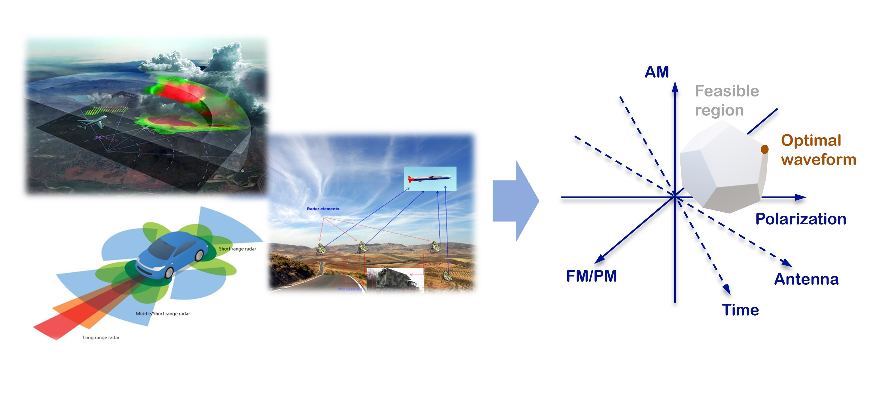

|
Radar Signal Processing and Waveform Design
|
 |
My research in radar signal processing focuses on waveform design, beamforming,
beampattern synthesis, target localization, and low-complexity optimization algorithms
for next-generation sensing and communication systems. In particular, I am interested in
MIMO radar waveform design, one-bit DAC radar, sparse array beampattern synthesis,
dual-function radar-communication systems, and integrated sensing and communication.
|
Radar waveform design plays an important role in improving sensing accuracy, detection
performance, hardware efficiency, and the coexistence between radar and communication
systems. My work develops optimization-based signal processing methods for designing
transmit waveforms, precoders, and beampatterns under practical hardware and system
constraints.
Related research topics include:
MIMO radar waveform and beampattern design
One-bit DAC radar signal processing
Radar-communication coexistence and dual-function radar-communication systems
Sparse array design and low-complexity ADMM-based optimization
Target localization and parameter estimation
During my Ph.D. research at the University of Luxembourg, I participated in projects related
to next-generation radar, high-mobility sensing and communication networks, and adaptive
communication frameworks, including SPRINGER, SENCOM, and AGNOSTIC.
Related Publications
T. Wei, Z. Cheng, and B. Liao,
“Transmit Beampattern Synthesis for MIMO Radar with One-Bit Digital-to-Analog Converters,”
Signal Processing, vol. 188, p. 108228, Nov. 2021.
T. Wei, L. Wu, and M. R. B. Shankar,
“Joint Waveform and Precoding Design for Coexistence of MIMO Radar and MU-MISO Communication,”
IET Signal Processing, vol. 16, no. 7, pp. 788-799, May 2022.
T. Wei, L. Wu, and M. R. B. Shankar,
“Sparse Array Beampattern Synthesis via Majorization-Based ADMM,”
in Proc. IEEE 94th Vehicular Technology Conference (VTC2021-Fall), Norman, OK, USA, 2021.
T. Wei, L. Wu, M. Alaee-Kerahroodi, and M. R. B. Shankar,
“Transmit Beampattern Synthesis for Planar Array with One-Bit DACs,”
in Proc. 21st International Radar Symposium (IRS), Berlin, Germany, 2021.
T. Wei, Z. Cheng, and B. Liao,
“Transmit Beampattern Synthesis for MIMO Radar with One-Bit DACs,”
in Proc. 27th European Signal Processing Conference (EUSIPCO), Amsterdam, Netherlands, 2020.
T. Wei, P. Chu, Z. Cheng, and B. Liao,
“Transmit Beampattern Design for MIMO Radar with One-Bit DACs via Block-Sparse SDR,”
in Proc. IEEE Sensor Array and Multichannel Signal Processing Workshop (SAM), Hangzhou, China, 2020.
T. Wei, H. Huang, and B. Liao,
“MIMO Radar Transmit Beampattern Synthesis via Waveform Design for Target Localization,”
in Proc. IEEE International Conference on Acoustics, Speech and Signal Processing (ICASSP),
Brighton, UK, 2019.
T. Wei, B. Liao, H. Huang, and Z. Quan,
“Online Mutual Coupling Calibration Using a Signal Source at Unknown Location,”
in Proc. IEEE Sensor Array and Multichannel Signal Processing Workshop (SAM), Sheffield, UK, 2018.
More details will be updated soon.
[Back to Research]
|